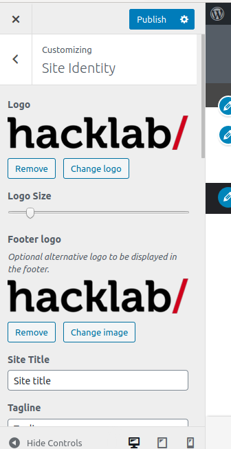
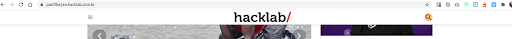

To access the customization of the website's identity click here

On this page you can manage the elements that make your website’s identity

On this page you can manage the elements that make your website’s identity
Website logo
Here you can upload an image to be the logo of your website, as well as remove it, or change it.
You can also, through the logo size field, define the size that the logo will have on the home

Footer logo
Here you can upload an image to be the footer logo, as well as remove it, or change it.

Site title and tagline
Here you define what will be the title and tagline texts and whether or not they will be displayed

Look:

Example of how looks on the page / post

The sticky header is when you go down the page and the header becomes a smaller banner with the logo centered

In this case you can add a special logo to be shown at that moment

Decoration special titles
In this field you can define the style of decoration that will accompany some main titles

Square

Top rectangle

Left bar

Custom

In Custom style you can upload an image to decorate the titles
Pagination
In this field you can customize the format of the pagination.
The pagination is in the search or also in the posts page of the categories

Square

Circle

In this field you can enter your website's favicon, which will be displayed in the navigation bar


Publish
Never forget to publish your changes, if you leave customize without publishing your changes, they will be lost.